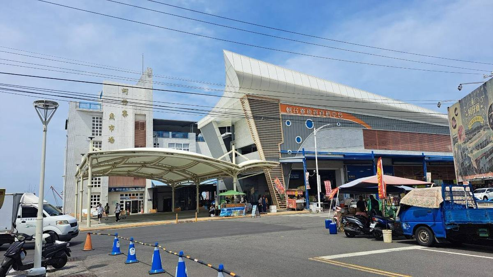
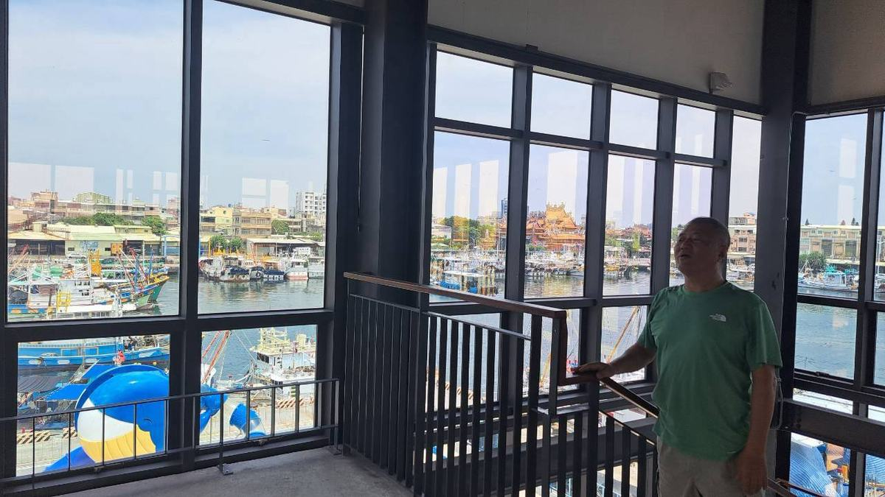

LINE 官方帳號原型 · 資訊整合提案

這個原型不是要再做一個網站。他們已經有官網、有電商、有四千一百八十位 LINE 好友。缺的是把這些接起來的那一層。
8/8 我們跟隨一組遊客全程 34 分鐘，也訪了漁會門市部。斷點全部發生在「當下」，那是聊天解得了、網站解不了的事。
刻意不做的事：不做金流、不做會員、不做客服對話、不碰他們既有系統的資料。
漁會門市部說沒有人可以當小編。所以第一版只做單向資訊與確定性回覆，沒有人回訊息比沒有帳號更傷。
下面是可以真的操作的模擬。問法照客人實際會講的方式寫，答不出來的它會說答不出來，不會亂猜。
沿用卡米克 LINE 機器人那套架構：入口路由加知識庫加出口防線。客人的問法是有限的，窮舉問法比窮舉機器人可能亂講的話可靠得多。
每一條回覆背後都有來源，來自 8/7 的場域簡報、8/8 的門市部訪談、以及現場觀察。查不到來源的一律不寫。
出口防線會擋掉三種話：保證最便宜、假裝自己是漁會官方、承諾庫存一定有。
它會直接說沒把握，然後給分部門的電話。寧可承認不知道，也不要給一個聽起來很順但可能是錯的答案。這是漁會的名字，不是我們的。
加好友的理由不是優惠，是資訊：來之前就知道今天值不值得跑一趟。一個人一天十分鐘就能發完。
位置是示意，不是實際比例。編號 01 到 06 是全套通用的：機器人的回覆、集章五站、後台操作單都用同一組號碼，不會有兩套。
每一站會告訴你那裡有什麼、要注意什麼，以及下一站該去哪。這正是現場最缺的東西：每一段結束的時候，沒有人告訴他下一步在哪。
LINE 官方的規則是一個多頁訊息最多九個分頁，只算一個對話框。也就是說丟一行純文字連結，跟給一整組帶圖帶按鈕的卡片，扣掉的訊息額度完全一樣。所以我們一律用多頁訊息。
下面的圖都是示意版，每一張都標明是示意圖、不使用漁會的正式標誌。真照片到手時換同名檔即可。
8/8 拍的。這些照片同時也是提案的證據。

七千五百萬蓋的直銷中心，二樓啟用至今未開放。落地窗看出去就是整個漁港。
8/8 訪談才知道：代客料理原本就設在這裡。門市部的說法是「因為攤商間覺得我需要的空間比較大，喬不容易，所以又變成回到馬路上了，其實這很危險」。
這個原型不需要任何人同意就能做出來。真正需要決定的東西，全部在漁會那一邊。
我們交付的：這支原型、LINE 圖文選單與推播文案規劃、一份 IA 與 PRD。
我們不交付的：正式上線的官網、LINE 官方帳號的實際設定、任何持續維護的承諾。原型的壽命只到漁會決定要不要往下走為止。